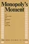
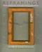
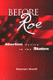

Browse
other Author lists:
A B C
D E F
G H I
J K L
M N O
P Q R
S T U
V W X
Y Z |
 |
Damaged Goods?
Women Living with Incurable Sexually Transmitted Diseases
Nack, Adina
264 pp • 5.5x8.25 • Spring 2008
paper 978-1-59213-708-4
cloth 978-1-59213-707-7
Excerpt available |
 |
Feminism
and Criminology
Naffine,
Ngaire
256 pp • 6x9 • Fall 1996
paper 978-1-56639-508-3
cloth 978-1-56639-507-6 |
 |
Journeys
of Women in Science and Engineering
No Universal Constants
Ambrose,
Susan A., Kristin L. Dunkle, Barbara B. Lazarus, Indira Nair
and Deborah A. Harkus
512 pp • 7x10 • Spring 1997
paper 978-1-56639-528-1
cloth 978-1-56639-527-4
Excerpt available |
 |
White
Boy
A Memoir
Naison,
Mark D.
240 pp • 6x9 • Spring 2002
paper 978-1-56639-942-5
cloth 978-1-56639-941-8
Excerpt available |
 |
The
Sum of Our Parts
Mixed-Heritage Asian Americans
edited
by Williams-Le�n, Teresa and Cynthia L. Nakashima, foreword
by Michael Omi
296 pp • 7x10 • Fall 2000
paper 978-1-56639-847-3
cloth 978-1-56639-846-6
Excerpt available |
 |
Arbitrariness
of the Death Penalty
Nakell,
Barry and Kenneth A. Hardy
Fall 1986
cloth 978-0-87722-443-3 |
 |
The
Libertarian Idea
Narveson,
Jan
416 pp • 6x9 • Fall 1988
paper 978-1-56639-008-8
cloth 978-0-87722-569-0 |
 |
Orix�s
Os Deuses Vivos da �frica
Orishas
The Living Gods of Africa in Brazil
Nascimento,
Abdias do, foreword by Molefi Kete Asante
170 pp • 10x11 • Fall 1997
cloth 978-85-85853-013 |

|
The
Sorcery of Color
Identity, Race, and Gender in Brazil
Nascimento, Elisa Larkin
336 pp • 6x9 • Fall 2006
paper 978-1-59213-351-2
cloth 978-1-59213-350-5
Excerpt available
|
 |
Dangerous
Passage
The Social Control of Sexuality in Women's Adolescence
Nathanson,
Constance A.
304 pp • Spring 1991
paper 978-1-56639-077-4
cloth 978-0-87722-824-0 |
 |
Granville
Hicks
The Intellectual in Mass Society
Levenson,
Leah and Jerry Natterstad
336 pp • 6x9 • Fall 1993
cloth 978-1-56639-104-7 |
 |
Maya
Achi Marimba Music in Guatemala
Navarrete
Pellicer, Sergio
288 pp • 6x9 • Spring 2005
paper 978-1-59213-292-8
cloth 978-1-59213-291-1
Excerpt available |
 |
La
Raza Unida Party
A Chicano Challenge to the U.S. Two-Party Dictatorship
Navarro,
Armando
384 pp • 7x10 • Spring 2000
paper 978-1-56639-771-1
cloth 978-1-56639-770-4 |
 |
Homecourt
The True Story of the Best Basketball Team You've Never Heard Of
Needle, Larry
72 pp • 5.5x8.5 • Spring 2013
paper 978-0-98195-608-4
|
|  |
Monopoly's
Moment
The Organization and Regulation of Canadian Utilities, 1830-1930
Armstrong,
Christopher and H. V. Nelles
384 pp • Spring 1986
cloth 978-0-87722-404-4 |
 |
Who
Knows
From Quine to a Feminist Empiricism
Nelson,
Lynn Hankinson
336 pp • 6x9 • Fall 1989
paper 978-1-56639-007-1
cloth 978-0-87722-647-5 |
|
Negotiated
Care
The Experience of Family Day Care Providers
Nelson,
Margaret K.
400 pp • Fall 1990
cloth 978-0-87722-728-1 |
 |
Creating
a New World Economy
Forces of Change and Plans for Action
edited
by Epstein, Gerald, Julie Graham and Jessica Nembhard, foreword
by Samuel Bowles
496 pp • 6x9 • Fall 1993
paper 978-1-56639-054-5
cloth 978-1-56639-053-8 |
 |
The
Philadelphia Area Weather Book
Nese,
Jon and Glenn "Hurricane" Schwartz, foreword by Edward G. Rendell
264 pp • 8.375x10 • Spring 2005
paper 978-1-59213-391-8
cloth 978-1-56639-956-2
Excerpt available |
 |
Immigrants,
Unions, and the New U.S. Labor Market
Ness,
Immanuel
240 pp • 5.5x8.25 • Spring 2005
paper 978-1-59213-041-2
cloth 978-1-59213-040-5
Excerpt available |

|
Klezmer
Music and Community in Twentieth-Century Jewish Philadelphia
Netsky, Hankus
New in Paperback!
186 pp • 6x9 • Spring 2017
paper 978-1-4399-0904-1
cloth 978-1-4399-0903-4
|
|  |
Reframings
New American Feminist Photographies
edited
by Neumaier, Diane, foreword by Anne Wilkes Tucker
336 pp • 8.5x10 • Fall 1995
paper 978-1-56639-332-4
cloth 978-1-56639-331-7
Excerpt available |
 |
Dollars
and Votes
How Business Campaign Contributions Subvert Democracy
Clawson,
Dan, Alan Neustadtl and Mark Weller
256 pp • 6x9 • Spring 1998
paper 978-1-56639-626-4
cloth 978-1-56639-625-7
Excerpt available |
 |
Hikes
Around Philadelphia
Newman, Boyd and Linda Newman
224 pp • 5.5x8.25 • Spring 1997
paper 978-1-56639-530-4
cloth 978-1-56639-529-8
Excerpt available |
 |
Labor's
Story in the United States
Nicholson,
Philip Yale
376 pp • 7x10 • Spring 2004
paper 978-1-59213-239-3
cloth 978-1-59213-020-7
Excerpt available |
|
Social Justice in Diverse Suburbs
History, Politics, and Prospects
edited by Niedt, Christopher
276 pp • 6x9 • Spring 2013
paper 978-1-4399-1050-4
cloth 978-1-4399-1049-8 |
 |
The
Person and the Situation
Essential Contributions of Social Psychology
Ross,
Lee and Richard E. Nisbett
1992 pp • Spring 1991
cloth 978-0-87722-851-6 |
 |
Baltimore '68
Riots and Rebirth in an American City
edited by Elfenbein, Jessica I., Thomas L. Hollowak, and Elizabeth M. Nix
294 pp • 6x9 • Spring 2011
paper 978-1-4399-0662-0
cloth 978-1-4399-0661-3
Excerpt available |
 |
Liberalism
at Work
The Rise and Fall of OSHA
Noble,
Charles
304 pp • Spring 1989
paper 978-0-87722-665-9
cloth 978-0-87722-421-1 |

|
The
American Diary of a Japanese Girl
An Annotated Edition
Noguchi, Yone, edited by Edward Marx and Laura E. Franey
224 pp • 6x9 • Fall 2006
paper 978-1-59213-555-4
cloth 978-1-59213-554-7
|

|
The University Against Itself
The NYU Strike and the Future of the Academic Workplace
edited by Krause, Monika, Mary Nolan, Michael Palm and Andrew Ross
280 pp • 6x9 • Fall 2007
paper 978-1-59213-741-1
cloth 978-1-59213-740-4
Excerpt available |
 |
Understanding
Enterprise Liability
Rethinking Tort Reform for the Twenty-First Century
Nolan,
Virginia and Edmund Ursin
272 pp • 5.5x8.25 • Fall 1994
cloth 978-1-56639-230-3 |
|  |
Before
Roe
Abortion Policy in the States
Nossiff,
Rosemary
216 pp • 5.5x8.25 • Fall 2000
paper 978-1-56639-810-7
cloth 978-1-56639-809-1
Excerpt available |
|
Boundaries
of Art
Novitz,
David
296 pp • 5.5x8.25 • Fall 1992
cloth 978-0-87722-928-5 |
 |
Knowledge,
Fiction, and Imagination
Novitz,
David
280 pp • Fall 1987
cloth 978-0-87722-480-8 |
 |
Chicago
Race, Class, and the Response to Urban Decline
Squires,
Gregory D., Larry Bennett, Kathleen McCourt and Philip Nyden
248 pp • Fall 1987
paper 978-0-87722-617-8
cloth 978-0-87722-487-7 |